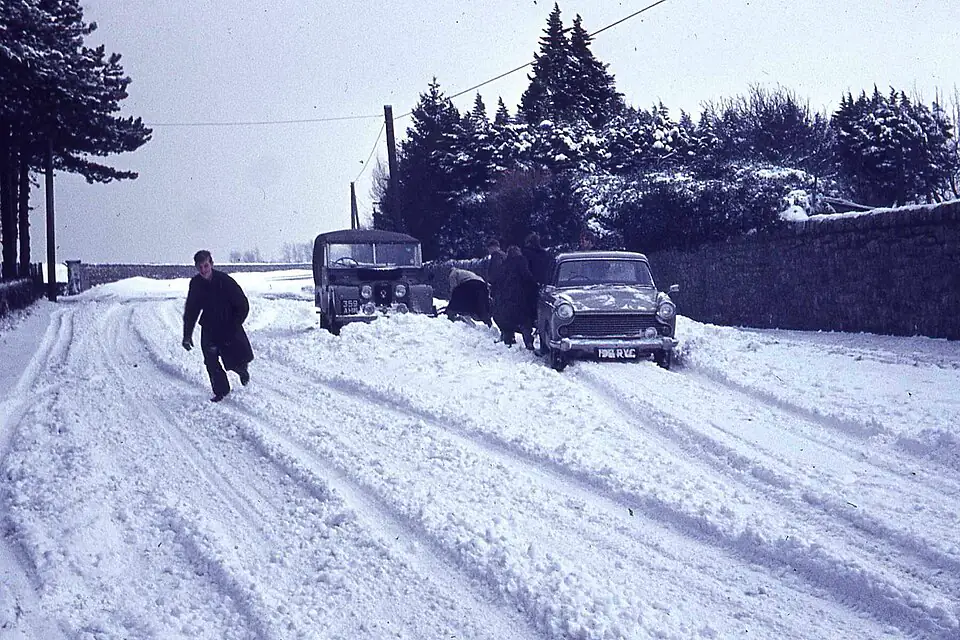
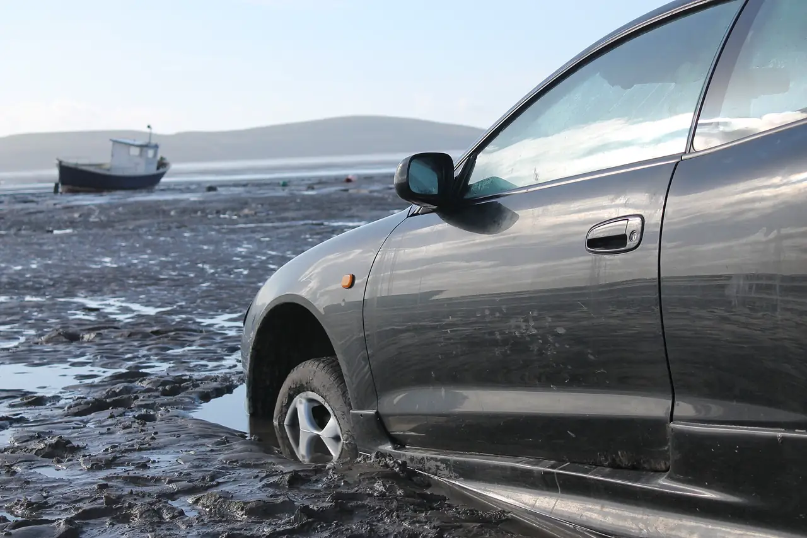

Vast in de modder? Wij trekken u los.
Doorslaande wielen op een nat weiland, een wiel in de berm of vast in de sneeuw: wij komen met een terreinwagen, lier en bergingsbanden naar u toe en trekken uw auto zorgvuldig los.
- In heel Nederland
- Auto, bus, camper en caravan
- Prijs vooraf
Waar wij u uit halen
Van een parkeerweiland na een regenbui tot een auto die tot de as in de klei staat. Elke situatie vraagt een andere aanpak, en die kennen we.
Vast in de modder
Wielen die doorslaan en een auto die steeds dieper wegzakt: in natte klei of modder komt u op eigen kracht vaak niet meer los.
Zo helpen wij
Weiland, festival en evenement
Parkeren op gras gaat goed tot het gaat regenen. Bij festivals, bruiloften, open dagen en evenementen staan dan tientallen auto's vast.
Zo helpen wij
Strand, duin en wad
Mul zand bij een strandopgang of natte slik bij laagwater: wie daar vastrijdt, wil snel weg voordat het tij of de drukte komt.
Zo helpen wij
Berm en greppel
Even uitwijken voor een tegenligger en het wiel zakt weg in de zachte berm. Of de auto glijdt half de greppel in.
Zo helpen wij
Sneeuw en ijzel
Een helling op die niet lukt, een oprit vol sneeuw of een auto die op ijzel van de weg is gegleden: in de winter staan auto's overal vast.
Zo helpen wijZo trekken wij u los
Geen geforceerd getrek aan uw auto, maar een rustige, vaste aanpak die we bij elke klus volgen.
Bel of app
Deel uw locatie, het type auto en waar u in vastzit. Een foto helpt ons om met het juiste materiaal te komen.
Wij komen eraan
Met een terreinwagen, lier, bergingsbanden en zandplaten. U hoort vooraf hoe laat we er zijn en wat het kost.
Losgetrokken
We bevestigen de band aan het trekoog en trekken rustig en recht, tot uw auto weer op vaste grond staat.
Weer op weg
We lopen samen de auto na en wijzen u de veiligste route terug naar de verharde weg.

Dit doet u beter wel en niet
De eerste minuten bepalen vaak hoe diep de auto uiteindelijk vastzit. Met deze vijf punten maakt u het niet erger.
- Blijf niet gas gevenDoordraaiende wielen graven zich dieper in en de koppeling en banden worden heet.
- Niemand achter een draaiend wielLaat niemand duwen achter of naast een wiel dat doorslaat: modder en stenen schieten weg.
- Zet de wielen rechtMet rechte wielen komt de auto het makkelijkst los, ook als wij straks trekken.
- Zoek het trekoog alvast opHet ligt meestal bij het reservewiel of de krik en schroeft u voor of achter in de bumper.
- Langs een doorgaande weg? Veiligheid eerstZet de alarmlichten aan en wacht op een veilige plek, niet vlak naast de auto.
Overal in Nederland
Van de zandwegen in Drenthe tot de stranden in Zeeland en de polderklei in Flevoland: wij komen naar u toe, in alle 342 gemeenten van Nederland.

Goed om te weten
Hoe snel kunnen jullie er zijn?
Dat hangt af van waar u staat en hoe druk het is, bijvoorbeeld bij sneeuw of na een regenachtig festivalweekend. Bij uw melding zeggen we eerlijk hoe laat we er kunnen zijn.
Wat kost het om mijn auto los te trekken?
Dat hangt af van de afstand, de situatie en hoe diep de auto vastzit. U hoort de prijs voordat we beginnen, zodat u niet voor verrassingen komt te staan.
Kan mijn auto beschadigd raken?
We bevestigen de bergingsband aan het trekoog of de bergingspunten van uw auto, nooit aan de bumper of de wielophanging, en trekken rustig en recht. Bij een auto die heel diep vastzit kan er altijd modder of druk op een bumper of de bodem komen. Zien we een risico, dan bespreken we dat met u voordat we trekken.
Moet ik lid zijn van een pechhulpdienst?
Nee. Iedereen kan ons bellen of appen, u hoeft nergens lid van te zijn en er is geen abonnement nodig.
Welke voertuigen kunnen jullie lostrekken?
Personenauto's, SUV's en terreinwagens, bestelbussen, campers en auto's met een caravan of aanhanger. Gaat het om een vrachtwagen of zwaar landbouwvoertuig, vraag het ons dan even: soms is daar ander materieel voor nodig.
Wat moet ik doorgeven als ik vastzit?
Uw locatie (het liefst via GPS of WhatsApp), het type voertuig, waar u in vastzit (modder, gras, zand, sneeuw of berm) en hoe diep. Een foto helpt ons enorm om met het juiste materiaal te komen.
Vastgereden?
Bel of app ons direct. We zeggen eerlijk wanneer we er kunnen zijn.